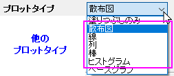

グリッドマップ
Tile-Grid-Map

必要なデータ
塗りつぶしのみ：XYY または XYYY 列
X列とY列はセルの位置を特定するために使用されます。2番目のY列はセルのカラーマップに使用されます。3番目のY列はオプションで、セルにラベルを付けるために使用されます。
ベースグラフ：ベースグラフとして一般的な2Dグラフ、プロット列と情報列ラベル行（または列）の複数のグループを含むワークシート。
その他のプロットタイプ：プロット列と情報列ラベル行（または列）の複数のグループを含むワークシート。
グラフ作成
データを選択します。
メニューから「」を選択します。
X-ファンクションダイアログplottilemapを開き、塗りつぶしのみまたは複数レイヤのグリッドマップを作成します。
セル塗りつぶしのみ（単一レイヤ）
プロットタイプとして塗りつぶしのみを選択すると、最初の2列が散布図として黒い枠とカラーマップ塗りつぶしでプロットされます。塗りつぶしの色は3列目で決定されます。4番目の列が選択されている場合、その値はセルのラベル/識別子として扱われます。
プロットのあるセル（複数レイヤ）
プロットタイプで別のオプション（塗りつぶしのみを除く）を選択すると、塗りつぶしのみのグリッドマップとは異なる、複数レイヤのグリッドマップがプロットされます。
- プロットタイプとしてベースグラフを選択した場合、他のグループ化されたデータを同様のグラフレイヤとしてプロットするには、既存のグラフレイヤをテンプレートとして選択し、これらのレイヤを行と列の値で配置する必要があります。
- 散布図などの他のプロットタイプを選択した場合、事前にグラフレイヤを準備する必要はありません。グループ化されたすべてのデータが同様の散布図としてプロットされ、行と列の値で配置されます。
- 
また、 ラベル行で色付けグループのコントロールを使用して、列ラベル行の値でレイヤの背景色とプロット色を指定することもできます。
情報列をラベル行に設定
列、行、色オプションで既存の列ラベル行を選択するだけでなく、ラベル行に情報を設定ツールを使用してワークシート列を選択し、それらを列ラベル行に設定して、その新しく作成された列ラベル行を使用して、グラフを配置したり、グラフレイヤの色を設定することもできます。
- まず、入力プロット列のほかに、順序付けされた識別子、列の順序、行の順序、背景色（オプション）の情報列を用意します。plottilemapダイアログで、Idenfitifierオプションとして識別子ラベル行（この場合は「ロングネーム」）を選択します。 ラベル行に情報を設定ボタンをクリックして、小さなラベル行に情報を設定ダイアログを開きます。
- ラベル行に情報を設定ダイアログで、識別子で順序付けされた識別子の列を選択します。この列は、情報列をラベル行に設定するときに、情報列の行を順序付けるために使用されます。列、行、色のオプションで「列」・「行」・「色」列を選択します。OKボタンをクリックします。
- ソースワークシートでは、情報列の値が転置され、列ラベル行の列、行、色として挿入されます。それらの値は、Col(F) および Col(B) ～ Col(E) の「ロングネーム」の識別子と照合され、並べ替えられています。そしてplottilemapダイアログで、これらの新しく作成されたラベル行は自動的に選択されます。ソースワークシートに「列」、「行」、「色」という名前の列ラベル行がすでに存在する場合、新しく作成されるラベル行は「列1」、「行1」、「色1」などとなります。
- OKボタンをクリックすると、グリッドマップが作図されます。4つの入力プロット列が4つのレイヤとしてプロットされ、レイヤが情報列に従って配置および色付けされていることがわかります。
テンプレート
塗りつぶしのみ: TileGridFillOnly.OTPU (Originのプログラムフォルダにインストールされています)
ベースグラフ: ベースグラフレイヤをテンプレートとして使用します。
その他のプロットタイプ: 組み込みのテンプレート（Scatter.otpuなど）を使用して、レイヤセルをプロットします。
Notes
複数レイヤのタイルマップを作成されたい場合には、プロットタイプとしてベースグラフを使用することを強くおすすめします。これは、目的のプロットとレイヤスタイルでベースグラフレイヤを事前に準備しておくと、グリッドマップのすべてのグラフレイヤ（セル）がこれらのスタイルを直接持ちます。
- 塗りつぶしのみのグリッドマップの場合、すべての散布点は正方形で、色の列で指定された異なる色で塗りつぶされます。
- 複数レイヤのグリッドマップの場合、すべてのレイヤも正方形で、水平間隔と垂直間隔はレイヤ幅とレイヤ高さの最小値の1%になります。また、全てのレイヤはレイヤプロパティ、軸スケール、軸スケール、プロットプロパティを共有します。識別子を表示オプションを選択すると、すべてのレイヤで同じ位置にレイヤのタイトルに識別子が表示されます。各レイヤにプロットが1つしかない場合でも、カラーチューザーのプロット毎タブを使用して、同じレイヤ内のプロットの色をいつでも調整できます。